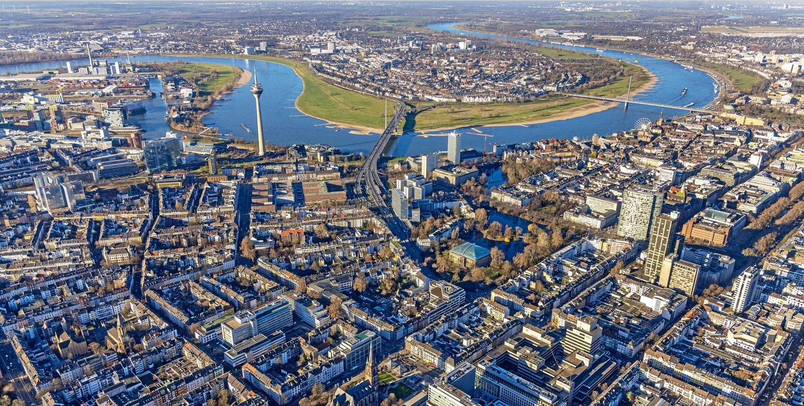

In diesem Projekt geht es uns darum die Stadtentwicklung von Düsseldorf darzustellen. Am Anfang beleuchten wir dafür die Vergangenheit Düsseldorfs gehen dabei später allerdings vor allem auf die Zukunft ein.
Das heißt z.B.: Wie wird sich Düsseldorf vermutlich in Zukunft ändern, welche Probleme können, vermutlich auftreten und wie soll Düsseldorf umweltfreundlicher werden.
Diese Webseite ist in Rückblick, aktuell und Zukunft eingeteilt. In den Texten hier auf der Startseite stehen dann immer die wichtigsten Infos. Ihr könnt aber auch auf die jeweiligen Links gehen, um mehr Infos zu erhalten.

Bis ca. 100 n. Chr.: Gebiet nur sehr schwach besiedelt.
200–300 n. Chr.: Vereinzelte Siedlungen linksrheinisch.
Keine durchgehende Siedlungskontinuität.
600–700: Durchgehende fränkische Besiedlung.
Um 700: Klostergründung Kaiserswerth.
Um 1100: Erste Erwähnungen von Derendorf, Golzheim, Stockum, Hamm.
1159: Erste urkundliche Erwähnung Düsseldorfs.
1288: Stadtgründung.
Um 1300: Erste Erweiterung.
1384–1394: Große Stadterweiterung.
1679–1716: Jan Wellem – kulturelle Blüte.
1815: Teil des Königreichs Preußen.
19. Jh.: Industrialisierung.
1882: Über 100.000 Einwohner.
1946: Landeshauptstadt NRW.
Nachkriegszeit: Wiederaufbau & Urbanisierung.
Heute: Politisches, wirtschaftliches, kulturelles Zentrum.
Rund 650.000 Einwohner – anhaltende Urbanisierung.
Neue Wohnquartiere, nachhaltige Mobilitätskonzepte und Verdichtung.
Symbol für erfolgreiche Umnutzung alter Industrieflächen zu modernen Büro-, Wohn- und Kulturstandorten.
Kö-Bogen I & II, Rückverlegung der Straßenbahn unter die Erde, mehr Grünflächen und Fußgängerzonen.
Beispiel für gelungene Stadtraumgestaltung mit hoher Aufenthalts- und Lebensqualität.
Ausbau von Radwegen, E‑Mobilität, ÖPNV‑Modernisierung und Verkehrsberuhigung.
Rath Mitte Campus, Grafental und Quartier Central stehen für urbane, gemischte Wohn‑ und Arbeitsquartiere.
Bedeutend für Mode, Medien, Messen und internationale Unternehmen – steigende Nachfrage nach modernen Büro‑ und Wohnflächen.
Große japanische Community und globale Unternehmen prägen die Stadtentwicklung.
Drittgrößter Flughafen Deutschlands – zentral für Infrastruktur, Verkehr und wirtschaftliche Entwicklung.
Hier kommt dein Text hin…